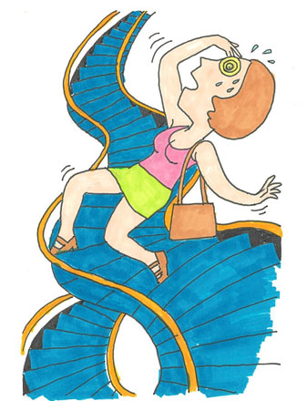

全般性不安障害（不安神経症）4
森田療法と生涯学習
（不安神経症、パニック、強迫観念）
福山 智子（仮名）50代・会社員（体験フォーラム会員）
「森田療法」と出会って15年
森田療法と出会い、神経症を克服して15年の月日が流れました。
「まるで絵に描いたような典型的な森田神経質者ですね」
15年前、メンタルヘルス岡本記念財団の体験フォーラムで管理人さんから最初に言われた言葉です。
「ならば、私は森田療法で絶対に克服できる！」管理人さんの一言が、私の森田療法への中途半端な学びの姿勢を一変させました。そして、今わたしは神経症克服体験談を書いています。私の体験談で、一人でも多くの方がなにかを感じ、ゆくゆくは神経症の克服のきっかけとなればこれほど嬉しいことはありません。
生まれ持った気質と共に
振り返ると、私の森田神経質者としての気質は幼い頃からすでにあったように思います。病気や死への恐怖心が人一倍強い子どもでした。小学生の頃から家にあった医学書を何度も読み返しては怯え、自分もそんな病気になって苦しみ死ぬのではないかと妄想し、異常なほど臆病になるところがありました。大人になってからもそれは変わらず、ほんのちょっとの体調の変化に敏感で、そのたびにあらぬ妄想を膨らませ安心を得るための病院通いが絶えない日々でした。
また、気分本位で、対人関係・外見・体調など、ちょっとでも気になることがあるとその気分に支配され、くよくよしてふさぎ込んで何も手につかなくなったりすることがよくありました。
心と身体の不調の始まり
そんな私は、33歳の頃から心の不調に襲われるようになりました。きっかけは「不整脈」でした。仕事やストレスが原因だったのでしょう。病院に行ったところ、悪いものではないので治療の必要はないと診断されました。
ですが、自覚症状が強く「そのうち心臓が止まってしまうのでは」という不安に襲われるようになりました。その不安感は日に日に強くなり、その不安を払拭するために何軒も病院通いをする始末でした。
そんなある日の運転中の出来事でした。生まれて初めて「自分は死ぬのではないか」と思うような不安発作に襲われました。心臓が飛び出すほどバクバクして、頭から血の気が引き、手のひらは汗でびっしょりとなり、いてもたってもいられないような恐怖に襲われる感覚になりました。
これをきっかけに、私の不安神経症の症状はどんどんひどくなっていきました。 いろいろな病院に行って検査をしてもらいましたが原因はわからず、結局は心療内科で「パニック障害」と診断されました。精神安定剤を処方されましたが発作は相変わらず起こり、鬱々とした日々を送っていました。
それでも、当時はまだ幼い子どもを二人抱えていたので、とにかく症状はありながらもなんとか頑張って子育てや家事、仕事をこなしていました。

パニック障害と同時に、なにをしても楽しくない鬱っぽい症状にも悩まされていました。そのうち「自分はうつ病かもしれない」という考えがよぎるようになりました。それから、“鬱＝自殺”のイメージが頭に浮かび、頻繁に「自分は自殺をするのではないか」という不安に襲われるようになったのです。
それとともに、子どもが言うことを聞かなかったときに激怒したことがきっかけだったと思うのですが、「自分は理性を失って子供を殺すのではないか」という強迫観念にも襲われるようになりました。包丁やロープなどいやなイメージが浮かぶものを見ると気分が悪くなり、考えないようにしようと努力すればするほど症状がひどくなっていきました。それからは、歩く歩数を数えるのが気になる、呼吸が気になる、まばたきの回数が気になって気分が悪くなるなど、次から次にいろいろなとらわれに悩まされるようになりました。
「どうやったらこの不快な感情から逃れられるか、そしてその症状や気分を取り除くことができるか」 起きている間はそれら症状のことしか考えられなくなり、がんじがらめになっていました。
森田療法に導かれて
そんな悩みの渦中、新聞の広告欄に載っていた書籍のタイトルにふっと目がいきました。『くよくよするなといわれても、くよくよ考えてしまう人のために』 という北西憲二先生の著書でした。タイトルを見た瞬間、なにかに導かれたかのようにすぐに書店で注文をし、その本によって森田療法に出会い、メンタルヘルス岡本記念財団を知ることになったのです。
目からウロコでした。
病気だと思い込んでいた自分がそうではないとわかった安堵から涙が溢れて止まりませんでした。やっと私のことを理解してくれる親友ができた、そんな思いでした。それからは、がむしゃらに森田療法関連の本を読みあさりました。まずは神経症を発症してしまう心のからくりを理解しました。特に共感するところには赤ペンで線を引き、常に森田療法の本をそばに置いていつでも読めるようにしていました。バックに一冊、車に一冊、寝室に1冊、トイレに1冊、リビングに1冊。そして体験フォーラムに参加し、そこで頂いたアドバイスは、とにかく素直に実践しました。
「外相整えば内相自ずから熟す」
症状はあっても、淡々と家事・育児・仕事をこなし、以前からやりたかった趣味も再開しました。そんな生活を始めて数ヵ月後、あんなにしつこかった症状がいつの間にか消えていました。
私が実践したことは、ごくごくシンプルなことです。
〇不安や恐怖から逃げ出さないこと。
〇自分の健康な欲求を日常生活の行為、行動を通して発揮すること。
変わらない学びの姿勢
いくら神経症を克服したとはいえ、やはり私は森田神経質者に変わりはないので、15年たった今でも日頃から用心深い生活を送っています。迷ったりしたときには森田療法の本を読むのですが、そうすると自分が進むべき道が自ずと見えてくるので、本当に不思議だなと思います。
森田療法というのは、神経症を克服したあとでさらに深みを増して心に響くものなのかもしれません。これからも森田療法と共に歩んでいきます。